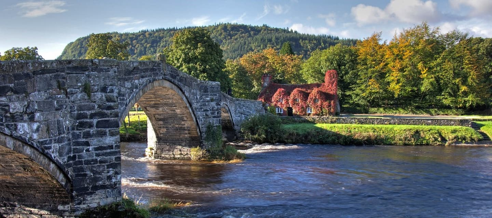

Day 1
The Scenic Conwy Valley
A spectacular start to the day features a coastal drive out onto the Great Orme Headland above the resort town of Llandudno. Nearby, we go onto visit the picturesque medieval walled town of Conwy with its commanding 13th century castle.
Heading out into the valley, Bodnant Gardens, is rated as one of the best and most beautiful landscaped gardens in the whole of Great Britain and hidden amongst the forest of the Conwy valley is one of the best private potteries in Wales.
At Trefriw there’s the famous traditional Woollen Mill and one of the most photographed locations in Wales comes up at Llanrwst. Hidden amongst the Gwydir forest to our ‘secret lake’.
At Gwydir Castle, you can discover one of the finest fortified Tudor manor houses in Wales. and nearby, you can discover a very traditional and scenic Welsh town that nearly became the capital of Wales. We also stop in the popular tourist village of Betws-y-Coed, where we uncover the local lore and culture of Wales. Nearby, we can stop off at one of the most beautiful waterfalls in Wales at Swallow Falls.
To round off this great touring day, we visit a beautiful Quintessential Welsh Village and the finale of the touring day (subject to the visibility) is our famous ‘secret view of Snowdonia!’
Highlights
- The Medieval Walled Town and Castle at Conwy
- Bodnant Gardens
- Trefriw Woollen Mill
- Llanrwst and Betws-y-Coed
- The Secret View of Snowdonia
- A Quintessential Welsh Farming Village
- The Secret Lake and a Celtic Pottery
- Gwydir Castle
- 16th Century Historic Farmhouse
